Akaigawa
Akaigawa · Hokkaido
Akaigawa
Highlighted on the Hokkaido map.
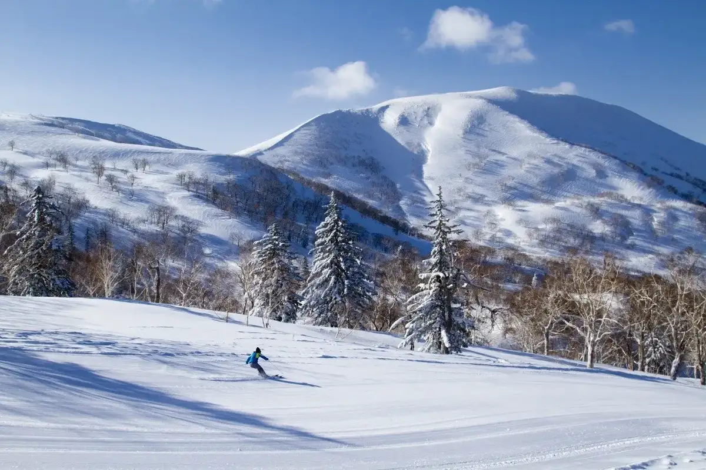
Stay
ひるねの里
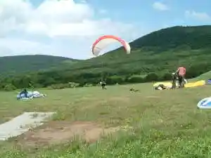
Hiruneno Sato
ＡＫＡＩＧＡＷＡ ＴＯＭＯ ＰＬＡＹＰＡＲＫ 住箱
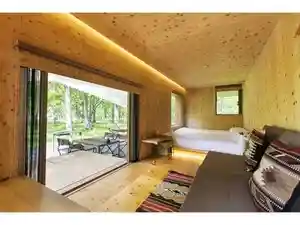
A K A I G A W A T O M O P L A Y P A R K Juu Hako
Yu Kiroro（ユ・キロロ）
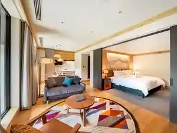
Yu Kiroro ( Yu Kiroro )
Dining
WDC ワッフルショップ
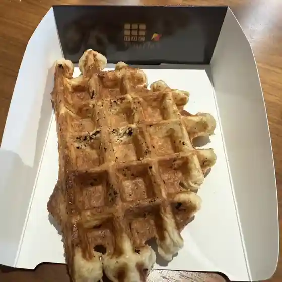
Wdc Waffurushoppu
アリスカフェ
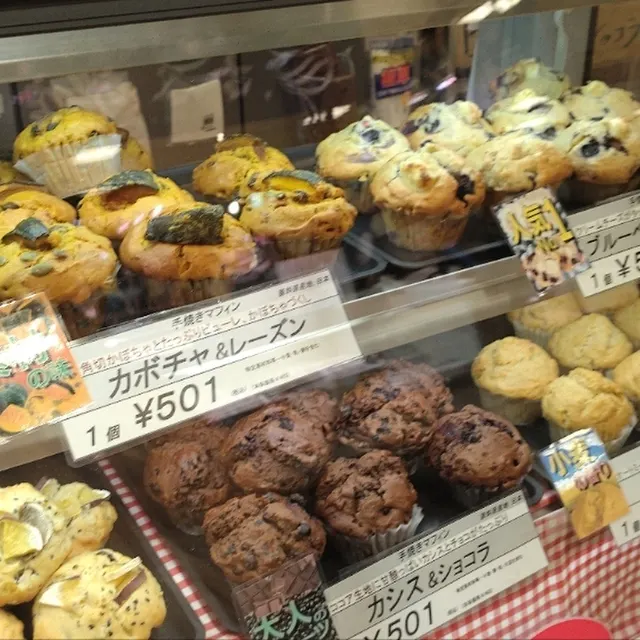
Arisukafe
ルミエール
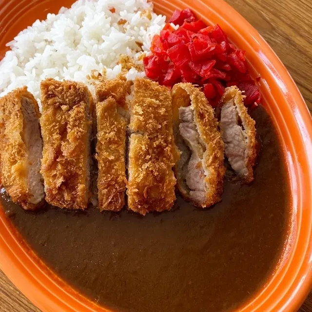
Rumieeru
赤井川村保養センター
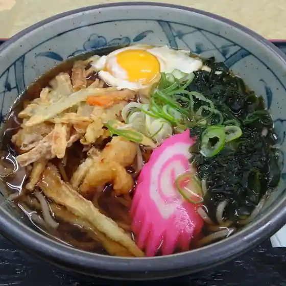
Akaigawa Mura Hoyou Sentaa
山頂レストラン 朝里ビュー
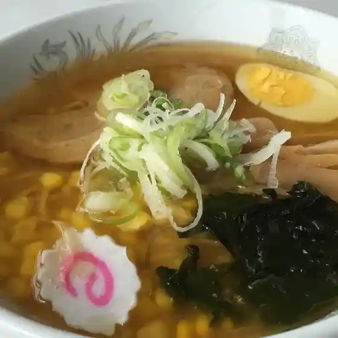
Sanchou Resutoran Asa Sato Byuu
アリス・ファーム
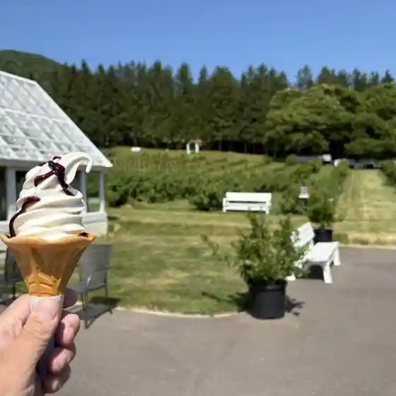
Arisu Faamu
クラブメッドキロロ・グランド
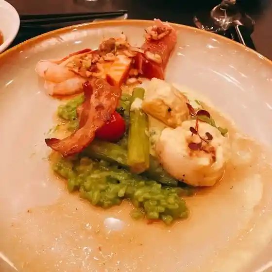
Kurabumeddokiroro Gurando
村ノ燈レストラン
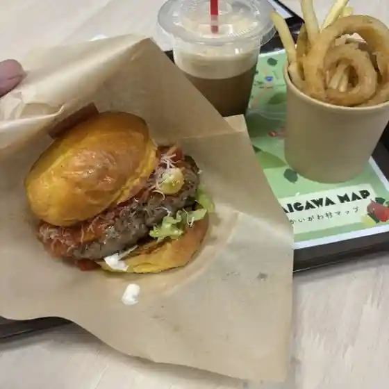
Mura No Tou Resutoran
Yukashi
Yukashi
ピッツェリア Akaigawa
Pittsueria Akaigawa
あかいがわ
Akaigawa
民宿あったべや
Minshuku Attabeya
みちしるべ
Michishirube
コロポックル村
Koropokkuru Mura
あかいがわジェラート
Akaigawa Jieraato
ミニキッチン うえ
Minikitchin Ue
山中牧場
Sanchuu Bokujou
シエル
Shieru
道の駅 あかいがわ
Michi No Eki Akaigawa
やまぶき
Yamabuki
ブラッスリー Akaigawa
Burassurii Akaigawa
カルデラ食堂民宿
Karudera Shokudou Minshuku
赤井川珈琲
Akaigawa Koohii
ベリーの丘カフェ
Berii No Oka Kafe
Sights
Kirorosu no Warudo Kiroro Resort
Kirorosu no Warudo Kiroro Resort
Akaigawa Tomo Purei Park
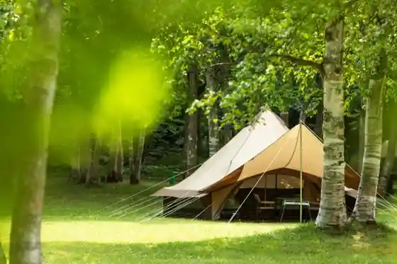
Akaigawa Tomo Purei Park